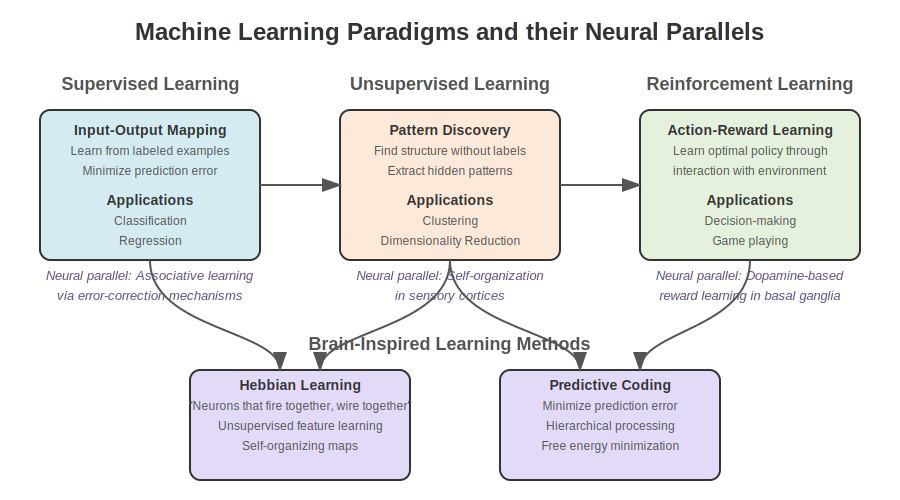
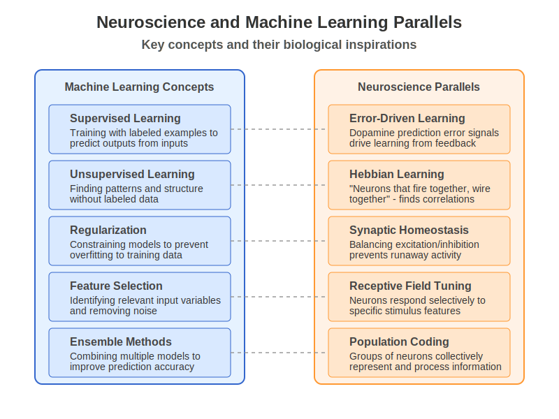

Chapter 9: Classical Machine-Learning Foundations#
9.0 Chapter Goals#
This chapter provides a foundation for understanding machine learning algorithms with connections to neuroscience. By the end of this chapter, you should be able to:
Implement and analyze key machine learning algorithms from scratch
Distinguish between different learning paradigms and choose appropriate methods for different problems
Evaluate and interpret model performance with appropriate metrics
Recognize the biological inspirations and parallels in classical ML algorithms
Apply classical machine learning methods to neuroscience data
9.1 Learning Paradigms#
Machine learning approaches can be categorized into different paradigms based on the nature of the learning signal and goal.
 Figure 9.1: Comparison of supervised, unsupervised, and reinforcement learning paradigms with their neuroscience parallels.
Supervised Learning#
In supervised learning, the algorithm learns a mapping from inputs to outputs based on labeled examples. This parallels associative learning in biological systems, where organisms learn to associate stimuli with outcomes.
Formally, given a dataset \(\mathcal{D} = \{(x_i, y_i)\}_{i=1}^{n}\) of input-output pairs, supervised learning aims to find a function \(f: \mathcal{X} \rightarrow \mathcal{Y}\) that minimizes a loss function \(\mathcal{L}(f(x), y)\).
Common applications:
Classification (discrete output spaces)
Regression (continuous output spaces)
Sequence prediction (structured output spaces)
import numpy as np
import matplotlib.pyplot as plt
from sklearn.model_selection import train_test_split
from sklearn.metrics import accuracy_score, mean_squared_error
# Example: Creating a synthetic dataset for supervised learning
np.random.seed(42)
# Classification example
X_class = np.random.randn(100, 2) # 100 samples, 2 features
y_class = (X_class[:, 0] + X_class[:, 1] > 0).astype(int) # Simple decision boundary
# Regression example
X_reg = np.random.randn(100, 1) # 100 samples, 1 feature
y_reg = 2 * X_reg.ravel() + 1 + 0.2 * np.random.randn(100) # Linear relationship with noise
# Visualize the datasets
plt.figure(figsize=(12, 5))
plt.subplot(1, 2, 1)
plt.scatter(X_class[:, 0], X_class[:, 1], c=y_class, cmap='viridis', edgecolors='k')
plt.colorbar(label='Class')
plt.xlabel('Feature 1')
plt.ylabel('Feature 2')
plt.title('Classification Dataset')
plt.grid(alpha=0.3)
plt.subplot(1, 2, 2)
plt.scatter(X_reg, y_reg)
plt.xlabel('Feature')
plt.ylabel('Target')
plt.title('Regression Dataset')
plt.grid(alpha=0.3)
plt.tight_layout()
plt.show()
Unsupervised Learning#
Unsupervised learning discovers patterns and structure in data without explicit output labels. This maps to the brain’s ability to extract regularities from sensory inputs and form internal representations.
Key objectives include:
Density estimation: modeling the underlying data distribution \(p(x)\)
Clustering: grouping similar data points
Dimensionality reduction: finding compact representations that preserve important structure
# Example: Simple K-means clustering from scratch
def kmeans(X, k, max_iters=100, tol=1e-4):
"""
Implement K-means clustering from scratch.
Args:
X: data matrix of shape (n_samples, n_features)
k: number of clusters
max_iters: maximum number of iterations
tol: convergence tolerance
Returns:
centroids: cluster centers
labels: cluster assignments for each data point
"""
# Initialize centroids randomly from the data
indices = np.random.choice(X.shape[0], k, replace=False)
centroids = X[indices]
for _ in range(max_iters):
# Assign each point to the nearest centroid
distances = np.sqrt(((X[:, np.newaxis, :] - centroids) ** 2).sum(axis=2))
labels = np.argmin(distances, axis=1)
# Update centroids
new_centroids = np.array([X[labels == i].mean(axis=0) for i in range(k)])
# Check for convergence
if np.all(np.abs(new_centroids - centroids) < tol):
break
centroids = new_centroids
return centroids, labels
# Generate a simple dataset with 3 clusters
np.random.seed(42)
n_samples = 300
cluster_centers = [(-5, -5), (0, 0), (5, 5)]
cluster_stds = [1, 1.5, 1]
X_cluster = np.vstack([
np.random.normal(center, std, (n_samples // 3, 2))
for center, std in zip(cluster_centers, cluster_stds)
])
# Run our K-means implementation
centroids, labels = kmeans(X_cluster, k=3)
# Visualize results
plt.figure(figsize=(10, 6))
plt.scatter(X_cluster[:, 0], X_cluster[:, 1], c=labels, cmap='viridis', alpha=0.7, edgecolors='k')
plt.scatter(centroids[:, 0], centroids[:, 1], marker='*', s=200, c='red', label='Centroids')
plt.title('K-means Clustering Result')
plt.xlabel('Feature 1')
plt.ylabel('Feature 2')
plt.legend()
plt.grid(alpha=0.3)
plt.show()
Reinforcement Learning#
Reinforcement learning involves an agent learning to maximize rewards through interactions with an environment. This paradigm closely resembles how animals learn from experience, particularly through dopamine-based reward systems in the basal ganglia.
Key components:
State space \(\mathcal{S}\): possible situations
Action space \(\mathcal{A}\): possible decisions
Reward function \(r(s,a)\): feedback signal
Policy \(\pi(a|s)\): strategy for selecting actions
Value function \(V(s)\): expected future reward from state \(s\)
RL seeks to find a policy that maximizes expected cumulative reward:
where \(\gamma\) is a discount factor that prioritizes immediate rewards.
# Example: Simple Q-learning for a grid world environment
def q_learning_demo():
"""Simple Q-learning demonstration in a grid world."""
# Define a simple 4x4 grid world
# States: 0-15 (grid positions)
# Actions: 0-3 (up, right, down, left)
# Rewards: -1 for each step, +10 for goal, -10 for trap
# Environment parameters
n_states = 16
n_actions = 4
goal_state = 15
trap_states = [5, 7, 11, 12]
# Create the Q-table
Q = np.zeros((n_states, n_actions))
# Learning parameters
alpha = 0.1 # Learning rate
gamma = 0.9 # Discount factor
epsilon = 0.1 # Exploration rate
max_episodes = 500
# Define state transitions
def get_next_state(state, action):
# Grid layout (4x4):
# 0 1 2 3
# 4 5 6 7
# 8 9 10 11
# 12 13 14 15
row, col = state // 4, state % 4
if action == 0: # Up
row = max(0, row - 1)
elif action == 1: # Right
col = min(3, col + 1)
elif action == 2: # Down
row = min(3, row + 1)
elif action == 3: # Left
col = max(0, col - 1)
return row * 4 + col
# Define rewards
def get_reward(state):
if state == goal_state:
return 10
elif state in trap_states:
return -10
else:
return -1
# Training loop
rewards_per_episode = []
for episode in range(max_episodes):
state = 0 # Start at top-left
done = False
total_reward = 0
while not done:
# Epsilon-greedy action selection
if np.random.random() < epsilon:
action = np.random.randint(n_actions)
else:
action = np.argmax(Q[state])
# Take action and observe next state and reward
next_state = get_next_state(state, action)
reward = get_reward(next_state)
total_reward += reward
# Update Q-value using the Q-learning update rule
Q[state, action] += alpha * (reward + gamma * np.max(Q[next_state]) - Q[state, action])
# Move to next state
state = next_state
# Check if episode is done
if state == goal_state or state in trap_states:
done = True
rewards_per_episode.append(total_reward)
# Plot learning progress
plt.figure(figsize=(10, 5))
plt.plot(np.convolve(rewards_per_episode, np.ones(20)/20, mode='valid'))
plt.xlabel('Episode')
plt.ylabel('Average Reward (20-episode window)')
plt.title('Q-learning Progress')
plt.grid(alpha=0.3)
plt.show()
# Visualize the learned policy
policy = np.argmax(Q, axis=1)
# Convert policy to arrows for visualization
arrows = ['^', '>', 'v', '<']
policy_grid = np.array([[arrows[policy[r*4 + c]] for c in range(4)] for r in range(4)])
# Mark trap and goal states
for trap in trap_states:
r, c = trap // 4, trap % 4
policy_grid[r, c] = 'X'
policy_grid[goal_state // 4, goal_state % 4] = 'G'
print("Learned Policy:")
print(policy_grid)
return Q
# Run the Q-learning demo
q_table = q_learning_demo()
Transfer Learning#
Transfer learning leverages knowledge gained from one task to improve performance on a related task. This relates to how biological learning generalizes across contexts.
Key approaches include:
Feature-based transfer: reusing representations
Instance-based transfer: using samples from the source domain
Parameter-based transfer: adapting model parameters
Biological parallel: Humans use prior knowledge to quickly adapt to new tasks, much like a pre-trained model fine-tuned on a new dataset.
Online vs Batch Learning#
Batch Learning: Process the entire dataset at once. Similar to deliberate, reflective learning.
Online Learning: Update the model with each new example. Similar to incremental, continuous learning in animals.
The trade-off involves computational efficiency versus adaptation to changing distributions.
9.2 Core ML Algorithms#
Linear Models#
Linear models form the foundation of machine learning, relating to simple input-output mappings in neural circuits.
Linear Regression#
Linear regression models the relationship between inputs and a continuous output using a linear function:
The model parameters are typically learned by minimizing the mean squared error:
This has a closed-form solution: \(w = (X^T X)^{-1} X^T y\), where \(X\) is the design matrix.
# Implement linear regression from scratch
class LinearRegression:
def __init__(self):
self.weights = None
self.bias = None
def fit(self, X, y):
"""Fit the linear regression model."""
# Add bias term
X_bias = np.column_stack([np.ones(X.shape[0]), X])
# Closed-form solution
coeffs = np.linalg.inv(X_bias.T @ X_bias) @ X_bias.T @ y
self.bias = coeffs[0]
self.weights = coeffs[1:]
def predict(self, X):
"""Make predictions."""
return self.bias + X @ self.weights
# Demonstrate linear regression
np.random.seed(42)
X = np.random.randn(100, 1)
y = 3 * X.ravel() + 2 + 0.5 * np.random.randn(100) # True parameters: w=3, b=2
# Split into train and test sets
X_train, X_test, y_train, y_test = train_test_split(X, y, test_size=0.2)
# Fit our model
model = LinearRegression()
model.fit(X_train, y_train)
# Make predictions
y_pred = model.predict(X_test)
# Calculate error
mse = mean_squared_error(y_test, y_pred)
# Plot results
plt.figure(figsize=(8, 6))
plt.scatter(X_train, y_train, label='Training data')
plt.scatter(X_test, y_test, label='Test data')
# Plot the regression line
x_line = np.linspace(X.min(), X.max(), 100).reshape(-1, 1)
y_line = model.predict(x_line)
plt.plot(x_line, y_line, 'r-', label='Fitted line')
plt.xlabel('X')
plt.ylabel('y')
plt.title(f'Linear Regression (w={model.weights[0]:.2f}, b={model.bias:.2f}, MSE={mse:.2f})')
plt.legend()
plt.grid(alpha=0.3)
plt.show()
Logistic Regression#
Logistic regression extends linear models to classification tasks by applying a sigmoid function to the linear output:
The parameters are learned by maximizing the log-likelihood (or minimizing the negative log-likelihood):
Biological parallel: The sigmoid activation function resembles the firing rate response of neurons to input current.
# Implement logistic regression from scratch
class LogisticRegression:
def __init__(self, learning_rate=0.01, max_iter=1000):
self.learning_rate = learning_rate
self.max_iter = max_iter
self.weights = None
self.bias = None
def sigmoid(self, z):
"""Sigmoid activation function."""
return 1 / (1 + np.exp(-np.clip(z, -500, 500))) # Clip to avoid overflow
def fit(self, X, y):
"""Fit the logistic regression model using gradient descent."""
n_samples, n_features = X.shape
# Initialize parameters
self.weights = np.zeros(n_features)
self.bias = 0
# Gradient descent
for _ in range(self.max_iter):
# Linear model
linear_model = X @ self.weights + self.bias
y_pred = self.sigmoid(linear_model)
# Compute gradients
dw = (1/n_samples) * np.dot(X.T, (y_pred - y))
db = (1/n_samples) * np.sum(y_pred - y)
# Update parameters
self.weights -= self.learning_rate * dw
self.bias -= self.learning_rate * db
def predict_proba(self, X):
"""Predict probabilities."""
linear_model = X @ self.weights + self.bias
return self.sigmoid(linear_model)
def predict(self, X, threshold=0.5):
"""Make binary predictions."""
return (self.predict_proba(X) >= threshold).astype(int)
# Generate a simple classification dataset
np.random.seed(42)
X = np.random.randn(100, 2)
y = ((X[:, 0] + X[:, 1]) > 0).astype(int)
# Add some noise to make it more interesting
noise_indices = np.random.choice(100, 10)
y[noise_indices] = 1 - y[noise_indices]
# Split data
X_train, X_test, y_train, y_test = train_test_split(X, y, test_size=0.2)
# Fit our model
log_reg = LogisticRegression(learning_rate=0.1)
log_reg.fit(X_train, y_train)
# Make predictions
y_pred = log_reg.predict(X_test)
accuracy = accuracy_score(y_test, y_pred)
# Visualize decision boundary
plt.figure(figsize=(8, 6))
# Plot data points
plt.scatter(X[:, 0], X[:, 1], c=y, cmap='viridis', edgecolors='k')
# Create a grid of points to visualize the decision boundary
xx, yy = np.meshgrid(np.linspace(-3, 3, 100), np.linspace(-3, 3, 100))
X_grid = np.c_[xx.ravel(), yy.ravel()]
Z = log_reg.predict(X_grid).reshape(xx.shape)
# Plot decision boundary
plt.contourf(xx, yy, Z, alpha=0.3, cmap='viridis')
plt.contour(xx, yy, Z, colors='k', linewidths=0.5)
plt.xlabel('Feature 1')
plt.ylabel('Feature 2')
plt.title(f'Logistic Regression Decision Boundary (Accuracy: {accuracy:.2f})')
plt.colorbar(label='Predicted class')
plt.grid(alpha=0.3)
plt.show()
Support Vector Machines#
Support Vector Machines (SVMs) find the hyperplane that maximizes the margin between classes, focusing on the boundary cases (support vectors).
For linearly separable data, the optimization problem is:
The kernel trick extends SVMs to non-linear boundaries by implicitly mapping data to higher-dimensional spaces.
Biological parallel: The margin-maximizing property relates to the brain’s ability to generalize from limited examples and enhance robustness to noise.
# Example: Using scikit-learn's SVM implementation
from sklearn.svm import SVC
from sklearn.datasets import make_moons
# Create a more complex dataset
X, y = make_moons(n_samples=100, noise=0.15, random_state=42)
# Split data
X_train, X_test, y_train, y_test = train_test_split(X, y, test_size=0.2)
# Create and train an SVM with radial basis function kernel
svm = SVC(kernel='rbf', gamma=1, C=10)
svm.fit(X_train, y_train)
# Make predictions
y_pred = svm.predict(X_test)
accuracy = accuracy_score(y_test, y_pred)
# Visualize the decision boundary
plt.figure(figsize=(8, 6))
# Plot training data
plt.scatter(X[:, 0], X[:, 1], c=y, cmap='viridis', edgecolors='k')
# Create a grid and compute SVM predictions
xx, yy = np.meshgrid(np.linspace(X[:, 0].min()-0.5, X[:, 0].max()+0.5, 100),
np.linspace(X[:, 1].min()-0.5, X[:, 1].max()+0.5, 100))
Z = svm.predict(np.c_[xx.ravel(), yy.ravel()]).reshape(xx.shape)
# Plot decision boundary and margins
plt.contourf(xx, yy, Z, alpha=0.3, cmap='viridis')
plt.contour(xx, yy, Z, colors='k', linewidths=0.5)
# Highlight support vectors
plt.scatter(svm.support_vectors_[:, 0], svm.support_vectors_[:, 1],
s=100, facecolors='none', edgecolors='k', label='Support Vectors')
plt.xlabel('Feature 1')
plt.ylabel('Feature 2')
plt.title(f'SVM with RBF Kernel (Accuracy: {accuracy:.2f})')
plt.legend()
plt.grid(alpha=0.3)
plt.show()
Decision Trees and Random Forests#
Decision trees make predictions by recursive binary partitioning of the feature space.
Key concepts:
Decision nodes: Test feature values against thresholds
Leaf nodes: Contain predictions
Splitting criteria: Gini impurity, entropy, variance reduction
Random forests combine multiple trees to reduce overfitting and improve generalization:
Bootstrap aggregating (bagging) of training samples
Random feature subset selection at each split
Majority voting (classification) or averaging (regression)
Biological parallel: Hierarchical decision-making in the prefrontal cortex may implement tree-like structures.
# Implement a simple decision tree for classification
class DecisionTreeNode:
def __init__(self, feature_idx=None, threshold=None, left=None, right=None, value=None):
self.feature_idx = feature_idx # Index of feature to split on
self.threshold = threshold # Threshold for the split
self.left = left # Left subtree (feature < threshold)
self.right = right # Right subtree (feature >= threshold)
self.value = value # Prediction value if leaf node
class SimpleDecisionTree:
def __init__(self, max_depth=5, min_samples_split=2):
self.max_depth = max_depth
self.min_samples_split = min_samples_split
self.root = None
def fit(self, X, y):
"""Build decision tree."""
self.root = self._grow_tree(X, y, depth=0)
def _grow_tree(self, X, y, depth):
"""Recursively grow the decision tree."""
n_samples, n_features = X.shape
n_classes = len(np.unique(y))
# Check stopping criteria
if (depth >= self.max_depth or
n_samples < self.min_samples_split or
n_classes == 1):
# Create leaf node with majority class
leaf_value = np.argmax(np.bincount(y.astype(int)))
return DecisionTreeNode(value=leaf_value)
# Find best split
best_feature, best_threshold = self._best_split(X, y)
# Split the data
left_indices = X[:, best_feature] < best_threshold
right_indices = ~left_indices
# Create child nodes
left_tree = self._grow_tree(X[left_indices], y[left_indices], depth + 1)
right_tree = self._grow_tree(X[right_indices], y[right_indices], depth + 1)
return DecisionTreeNode(
feature_idx=best_feature,
threshold=best_threshold,
left=left_tree,
right=right_tree
)
def _best_split(self, X, y):
"""Find the best feature and threshold for splitting."""
n_samples, n_features = X.shape
best_gini = float('inf')
best_feature = None
best_threshold = None
for feature_idx in range(n_features):
# Get unique threshold values
thresholds = np.unique(X[:, feature_idx])
for threshold in thresholds:
# Split data based on threshold
left_indices = X[:, feature_idx] < threshold
right_indices = ~left_indices
# Skip if either side is empty
if np.sum(left_indices) == 0 or np.sum(right_indices) == 0:
continue
# Calculate Gini impurity
left_gini = self._gini(y[left_indices])
right_gini = self._gini(y[right_indices])
# Weighted average of Gini impurity
n_left = np.sum(left_indices)
n_right = np.sum(right_indices)
gini = (n_left * left_gini + n_right * right_gini) / n_samples
# Update best split if this is better
if gini < best_gini:
best_gini = gini
best_feature = feature_idx
best_threshold = threshold
return best_feature, best_threshold
def _gini(self, y):
"""Calculate Gini impurity."""
m = len(y)
if m == 0:
return 0
# Count occurrences of each class
_, counts = np.unique(y, return_counts=True)
probabilities = counts / m
# Calculate Gini impurity
return 1 - np.sum(probabilities**2)
def predict(self, X):
"""Predict class labels for samples in X."""
return np.array([self._predict_sample(x, self.root) for x in X])
def _predict_sample(self, x, node):
"""Predict class for a single sample."""
# If leaf node, return the value
if node.value is not None:
return node.value
# Otherwise, check the feature and go left or right
if x[node.feature_idx] < node.threshold:
return self._predict_sample(x, node.left)
else:
return self._predict_sample(x, node.right)
# Create a more complex dataset
from sklearn.datasets import make_classification
X, y = make_classification(n_samples=100, n_features=2, n_redundant=0, n_informative=2,
random_state=42, n_clusters_per_class=1)
# Split the data
X_train, X_test, y_train, y_test = train_test_split(X, y, test_size=0.2)
# Train our decision tree
tree = SimpleDecisionTree(max_depth=3)
tree.fit(X_train, y_train)
# Make predictions
y_pred = tree.predict(X_test)
accuracy = accuracy_score(y_test, y_pred)
# Visualize the decision boundaries
plt.figure(figsize=(10, 6))
# Plot the data points
plt.scatter(X[:, 0], X[:, 1], c=y, cmap='viridis', edgecolors='k')
# Create a grid and compute decision tree predictions
xx, yy = np.meshgrid(np.linspace(X[:, 0].min()-0.5, X[:, 0].max()+0.5, 100),
np.linspace(X[:, 1].min()-0.5, X[:, 1].max()+0.5, 100))
Z = tree.predict(np.c_[xx.ravel(), yy.ravel()]).reshape(xx.shape)
# Plot decision boundary
plt.contourf(xx, yy, Z, alpha=0.3, cmap='viridis')
plt.contour(xx, yy, Z, colors='k', linewidths=0.5)
plt.xlabel('Feature 1')
plt.ylabel('Feature 2')
plt.title(f'Decision Tree Boundaries (Accuracy: {accuracy:.2f})')
plt.grid(alpha=0.3)
plt.show()
Clustering Algorithms#
Clustering algorithms group similar instances without labeled training data.
K-means#
K-means partitions data into k clusters by minimizing within-cluster variance:
Initialize k cluster centers
Assign each point to the nearest center
Update centers to be the mean of assigned points
Repeat until convergence
Biological parallel: Visual cortex forms categories from exposure to similar stimuli, akin to unsupervised clustering.
Hierarchical Clustering#
Hierarchical clustering builds a tree of nested clusters:
Agglomerative (bottom-up): Start with each point as a cluster and merge
Divisive (top-down): Start with one cluster and split
# Implement hierarchical clustering from scratch
def hierarchical_clustering(X, n_clusters):
"""Agglomerative hierarchical clustering."""
# Start with each sample in its own cluster
n_samples = X.shape[0]
clusters = [[i] for i in range(n_samples)]
# Calculate pairwise distances between all points
distances = np.zeros((n_samples, n_samples))
for i in range(n_samples):
for j in range(i+1, n_samples):
distances[i, j] = distances[j, i] = np.sqrt(np.sum((X[i] - X[j])**2))
# Merge clusters until we reach the desired number
while len(clusters) > n_clusters:
# Find the two closest clusters
min_dist = float('inf')
merge_pair = (0, 0)
for i in range(len(clusters)):
for j in range(i+1, len(clusters)):
# Calculate average linkage distance (mean of pairwise distances)
cluster_dist = 0
count = 0
for x in clusters[i]:
for y in clusters[j]:
cluster_dist += distances[x, y]
count += 1
cluster_dist /= count
if cluster_dist < min_dist:
min_dist = cluster_dist
merge_pair = (i, j)
# Merge the closest clusters
i, j = merge_pair
clusters[i].extend(clusters[j])
clusters.pop(j)
# Create cluster labels for each sample
labels = np.zeros(n_samples, dtype=int)
for cluster_idx, cluster in enumerate(clusters):
for sample_idx in cluster:
labels[sample_idx] = cluster_idx
return labels
# Generate data with 3 clusters
np.random.seed(42)
n_samples = 150
centers = [(-5, -5), (0, 0), (5, 5)]
stds = [1, 1.5, 1]
X_cluster = np.vstack([
np.random.normal(centers[i], stds[i], (n_samples // 3, 2))
for i in range(3)
])
# Apply hierarchical clustering
labels = hierarchical_clustering(X_cluster, n_clusters=3)
# Plot results
plt.figure(figsize=(10, 6))
plt.scatter(X_cluster[:, 0], X_cluster[:, 1], c=labels, cmap='viridis', edgecolors='k')
plt.title('Hierarchical Clustering Result')
plt.xlabel('Feature 1')
plt.ylabel('Feature 2')
plt.grid(alpha=0.3)
plt.show()
9.3 Model Evaluation#
Cross-validation Techniques#
Cross-validation estimates model performance on unseen data:
K-fold CV: Split data into k subsets, use k-1 for training and 1 for validation, rotate k times
Leave-one-out CV: Special case where k = n (number of samples)
Stratified CV: Maintains class distribution in each fold
# Implement k-fold cross-validation from scratch
def k_fold_cross_validation(model, X, y, k=5):
"""Perform k-fold cross-validation and return scores."""
n_samples = len(X)
fold_size = n_samples // k
# Shuffle data indices
indices = np.random.permutation(n_samples)
# Store scores for each fold
scores = []
for fold in range(k):
# Select validation indices for this fold
val_start = fold * fold_size
val_end = (fold + 1) * fold_size if fold < k - 1 else n_samples
val_indices = indices[val_start:val_end]
train_indices = np.concatenate([indices[:val_start], indices[val_end:]])
# Split data
X_train, X_val = X[train_indices], X[val_indices]
y_train, y_val = y[train_indices], y[val_indices]
# Train the model
model.fit(X_train, y_train)
# Evaluate on validation fold
y_pred = model.predict(X_val)
accuracy = np.mean(y_pred == y_val)
scores.append(accuracy)
return scores
# Example: Using cross-validation on logistic regression
# Create a classification dataset
np.random.seed(42)
X = np.random.randn(100, 2)
y = ((X[:, 0] + X[:, 1]) > 0).astype(int)
# Create logistic regression model
log_reg = LogisticRegression(learning_rate=0.1, max_iter=1000)
# Perform cross-validation
cv_scores = k_fold_cross_validation(log_reg, X, y, k=5)
print(f"Cross-validation scores: {cv_scores}")
print(f"Mean accuracy: {np.mean(cv_scores):.2f} ± {np.std(cv_scores):.2f}")
Regularization Approaches#
Regularization techniques prevent overfitting by adding constraints to model complexity:
L1 regularization (Lasso): Adds \(\lambda \sum |w_i|\) to loss, promotes sparsity
L2 regularization (Ridge): Adds \(\lambda \sum w_i^2\) to loss, shrinks weights
Elastic Net: Combines L1 and L2 penalties
Early stopping: Halt training when validation performance degrades
Biological parallel: Synaptic scaling and homeostatic plasticity in the brain serve as biological “regularizers.”
# Implement ridge regression (L2 regularization)
class RidgeRegression:
def __init__(self, alpha=1.0):
self.alpha = alpha
self.weights = None
self.bias = None
def fit(self, X, y):
"""Fit ridge regression with L2 regularization."""
n_samples, n_features = X.shape
# Add bias term
X_bias = np.column_stack([np.ones(n_samples), X])
# Closed-form solution with regularization
# (X^T X + αI)^(-1) X^T y
identity = np.eye(n_features + 1)
identity[0, 0] = 0 # Don't regularize bias term
coeffs = np.linalg.inv(X_bias.T @ X_bias + self.alpha * identity) @ X_bias.T @ y
self.bias = coeffs[0]
self.weights = coeffs[1:]
def predict(self, X):
"""Make predictions."""
return self.bias + X @ self.weights
# Generate data where regularization helps
np.random.seed(42)
n_samples = 30
n_features = 20 # High-dimensional, prone to overfitting
# True model only uses the first 5 features
true_weights = np.zeros(n_features)
true_weights[:5] = np.random.randn(5)
true_bias = 1.0
# Generate data
X = np.random.randn(n_samples, n_features)
y = true_bias + X @ true_weights + 0.5 * np.random.randn(n_samples)
# Split data
X_train, X_test, y_train, y_test = train_test_split(X, y, test_size=0.3)
# Compare regular linear regression vs. ridge regression
models = {
'Linear Regression': LinearRegression(),
'Ridge (α=0.1)': RidgeRegression(alpha=0.1),
'Ridge (α=1.0)': RidgeRegression(alpha=1.0),
'Ridge (α=10.0)': RidgeRegression(alpha=10.0)
}
results = {}
for name, model in models.items():
model.fit(X_train, y_train)
y_pred_train = model.predict(X_train)
y_pred_test = model.predict(X_test)
train_mse = mean_squared_error(y_train, y_pred_train)
test_mse = mean_squared_error(y_test, y_pred_test)
results[name] = {
'train_mse': train_mse,
'test_mse': test_mse,
'weights': model.weights
}
print(f"{name}: Train MSE = {train_mse:.4f}, Test MSE = {test_mse:.4f}")
# Visualize weights
plt.figure(figsize=(12, 6))
plt.subplot(1, 2, 1)
for name, result in results.items():
plt.plot(result['weights'], 'o-', label=name)
plt.axhline(y=0, color='k', linestyle='--', alpha=0.3)
plt.xlabel('Feature index')
plt.ylabel('Weight value')
plt.title('Model Weights Comparison')
plt.legend()
plt.grid(alpha=0.3)
plt.subplot(1, 2, 2)
names = list(results.keys())
train_errors = [results[name]['train_mse'] for name in names]
test_errors = [results[name]['test_mse'] for name in names]
x = np.arange(len(names))
width = 0.35
plt.bar(x - width/2, train_errors, width, label='Train MSE')
plt.bar(x + width/2, test_errors, width, label='Test MSE')
plt.xticks(x, names, rotation=45)
plt.ylabel('Mean Squared Error')
plt.title('Training vs. Test Error')
plt.legend()
plt.grid(alpha=0.3)
plt.tight_layout()
plt.show()
Bias-Variance Trade-off#
The bias-variance decomposition helps understand model errors:
Bias: Error from incorrect assumptions in the model (underfitting)
Variance: Error from sensitivity to small fluctuations in training data (overfitting)
Irreducible error: Noise in the data
More complex models have higher variance but lower bias, leading to a trade-off.
 Figure 9.2: The bias-variance tradeoff illustrating how error changes with model complexity. Simple models can underfit (high bias), while complex models can overfit (high variance).
Figure 9.2: The bias-variance tradeoff illustrating how error changes with model complexity. Simple models can underfit (high bias), while complex models can overfit (high variance).
# Simulate bias-variance tradeoff
def simulate_bias_variance_tradeoff():
"""Demonstrate bias-variance tradeoff with polynomial regression."""
# Generate true function: f(x) = sin(x)
np.random.seed(42)
n_samples = 30
x_true = np.linspace(0, 10, 100)
y_true = np.sin(x_true)
# Generate noisy training data
x_train = np.random.uniform(0, 10, n_samples)
y_train = np.sin(x_train) + 0.2 * np.random.randn(n_samples)
# Polynomial regression with different degrees
degrees = [1, 3, 10, 20]
plt.figure(figsize=(12, 8))
for i, degree in enumerate(degrees):
# Fit polynomial
coeffs = np.polyfit(x_train, y_train, degree)
poly = np.poly1d(coeffs)
# Evaluate
y_pred = poly(x_true)
train_mse = np.mean((poly(x_train) - y_train)**2)
# Calculate test error over multiple datasets
n_datasets = 100
test_predictions = np.zeros((n_datasets, len(x_true)))
for j in range(n_datasets):
# Generate new noisy dataset
y_train_new = np.sin(x_train) + 0.2 * np.random.randn(n_samples)
# Fit model
coeffs_new = np.polyfit(x_train, y_train_new, degree)
poly_new = np.poly1d(coeffs_new)
# Predict
test_predictions[j] = poly_new(x_true)
# Calculate bias and variance
mean_prediction = np.mean(test_predictions, axis=0)
bias = np.mean((mean_prediction - y_true)**2)
variance = np.mean(np.var(test_predictions, axis=0))
# Plot
plt.subplot(2, 2, i+1)
plt.scatter(x_train, y_train, color='blue', alpha=0.5, label='Training data')
plt.plot(x_true, y_true, 'g-', label='True function')
plt.plot(x_true, y_pred, 'r-', label='Model prediction')
# Plot predictions from different datasets
for j in range(min(10, n_datasets)): # Plot just 10 to avoid clutter
plt.plot(x_true, test_predictions[j], 'k-', alpha=0.1)
plt.title(f'Degree {degree} Polynomial\nBias={bias:.4f}, Var={variance:.4f}, Train MSE={train_mse:.4f}')
plt.xlabel('x')
plt.ylabel('y')
plt.ylim(-1.5, 1.5)
plt.legend()
plt.grid(alpha=0.3)
plt.tight_layout()
plt.show()
simulate_bias_variance_tradeoff()
Evaluation Metrics#
Choose metrics based on the task and what errors are most important:
Classification metrics:
Accuracy: \(\frac{TP + TN}{TP + TN + FP + FN}\)
Precision: \(\frac{TP}{TP + FP}\) (focus on false positives)
Recall: \(\frac{TP}{TP + FN}\) (focus on false negatives)
F1 Score: \(2 \cdot \frac{precision \cdot recall}{precision + recall}\)
AUC-ROC: Area under Receiver Operating Characteristic curve
Regression metrics:
Mean Squared Error (MSE): \(\frac{1}{n}\sum(y_i - \hat{y}_i)^2\)
Root Mean Squared Error (RMSE): \(\sqrt{MSE}\)
Mean Absolute Error (MAE): \(\frac{1}{n}\sum|y_i - \hat{y}_i|\)
R² Score: \(1 - \frac{\sum(y_i - \hat{y}_i)^2}{\sum(y_i - \bar{y})^2}\)
9.4 Feature Engineering#
Feature Selection Methods#
Feature selection improves model performance and interpretability:
 Figure 9.4: Comparison of different feature selection approaches (filter, wrapper, and embedded methods) for identifying relevant features in high-dimensional data.
Figure 9.4: Comparison of different feature selection approaches (filter, wrapper, and embedded methods) for identifying relevant features in high-dimensional data.
Filter methods: Select features based on their relationship with the target (correlation, mutual information)
Wrapper methods: Use a model’s performance to evaluate feature subsets (recursive feature elimination)
Embedded methods: Feature selection happens during model training (L1 regularization)
Biological parallel: Attention mechanisms in the brain filter relevant features from sensory input.
# Implement mutual information feature selection
def mutual_information_feature_selection(X, y, k=5):
"""Select top k features based on mutual information."""
n_features = X.shape[1]
mi_scores = np.zeros(n_features)
# Calculate mutual information for each feature
for i in range(n_features):
# Discretize the feature for MI calculation
x_discrete = np.digitize(X[:, i], bins=np.linspace(X[:, i].min(), X[:, i].max(), 10))
# For classification tasks
if len(np.unique(y)) < 10: # Heuristic for classification
mi_scores[i] = mutual_info_score(x_discrete, y)
else: # For regression tasks
# Discretize target for MI estimation
y_discrete = np.digitize(y, bins=np.linspace(y.min(), y.max(), 10))
mi_scores[i] = mutual_info_score(x_discrete, y_discrete)
# Select top k features
top_indices = np.argsort(mi_scores)[-k:]
return top_indices, mi_scores
# Generate synthetic data with informative and noise features
def generate_synthetic_dataset(n_samples=200, n_informative=5, n_noise=15):
"""Generate data with informative and noise features."""
np.random.seed(42)
# Generate informative features
X_informative = np.random.randn(n_samples, n_informative)
# Generate target using only informative features
y = 2 * X_informative[:, 0] + 0.5 * X_informative[:, 1]**2 + \
np.sin(X_informative[:, 2]) + np.abs(X_informative[:, 3]) + \
0.2 * np.random.randn(n_samples)
# Add noise features
X_noise = np.random.randn(n_samples, n_noise)
# Combine features
X = np.hstack([X_informative, X_noise])
# Shuffle feature order
feature_indices = np.random.permutation(n_informative + n_noise)
X = X[:, feature_indices]
# Keep track of which features were truly informative
true_informative = [i for i, idx in enumerate(feature_indices) if idx < n_informative]
return X, y, true_informative
# Generate data
X, y, true_informative = generate_synthetic_dataset()
# Apply mutual information feature selection
k = 5
selected_indices, mi_scores = mutual_information_feature_selection(X, y, k=k)
# Compare with true informative features
print(f"True informative features: {sorted(true_informative)}")
print(f"Selected features: {sorted(selected_indices.tolist())}")
# Plot mutual information scores
plt.figure(figsize=(10, 6))
plt.bar(np.arange(X.shape[1]), mi_scores)
plt.scatter(selected_indices, mi_scores[selected_indices], color='red', s=100, label='Selected features')
plt.scatter(true_informative, mi_scores[true_informative], color='green', s=50, marker='x', label='True informative')
plt.xlabel('Feature index')
plt.ylabel('Mutual information')
plt.title('Feature Selection with Mutual Information')
plt.legend()
plt.grid(alpha=0.3)
plt.show()
Dimensionality Reduction#
Dimensionality reduction techniques create compact representations of data:
Principal Component Analysis (PCA): Linear projection to maximize variance
t-SNE: Non-linear projection that preserves local structure
Autoencoders: Neural networks that compress data through a bottleneck
Biological parallel: Neural representations often use dimensionality reduction for efficient coding.
# Implement PCA from scratch
class PCA:
def __init__(self, n_components=2):
self.n_components = n_components
self.components = None
self.mean = None
def fit(self, X):
"""Fit PCA on data X."""
# Standardize data
self.mean = np.mean(X, axis=0)
X = X - self.mean
# Compute covariance matrix
cov_matrix = np.cov(X, rowvar=False)
# Eigenvalue decomposition
eigenvalues, eigenvectors = np.linalg.eigh(cov_matrix)
# Sort eigenvectors by descending eigenvalues
idx = np.argsort(eigenvalues)[::-1]
eigenvectors = eigenvectors[:, idx]
# Select top n_components
self.components = eigenvectors[:, :self.n_components]
return self
def transform(self, X):
"""Transform data to lower-dimensional space."""
X = X - self.mean
return np.dot(X, self.components)
def fit_transform(self, X):
"""Fit and transform in one step."""
self.fit(X)
return self.transform(X)
# Demonstrate PCA on a simple dataset
from sklearn.datasets import load_digits
# Load digits dataset
digits = load_digits()
X, y = digits.data, digits.target
# Apply PCA
pca = PCA(n_components=2)
X_pca = pca.fit_transform(X)
# Visualize first two principal components
plt.figure(figsize=(10, 8))
for digit in range(10):
mask = (y == digit)
plt.scatter(X_pca[mask, 0], X_pca[mask, 1], label=str(digit), alpha=0.7)
plt.xlabel('First Principal Component')
plt.ylabel('Second Principal Component')
plt.title('PCA of Digits Dataset')
plt.legend()
plt.grid(alpha=0.3)
plt.show()
Handling Categorical Variables#
Categorical variables require special processing:
One-hot encoding: Create binary features for each category
Label encoding: Map categories to integers
Target encoding: Replace categories with target statistics
Entity embeddings: Learn low-dimensional representations
Scaling and Normalization#
Feature scaling ensures that all features contribute appropriately:
StandardScaler: \(x' = \frac{x - \mu}{\sigma}\) (zero mean, unit variance)
MinMaxScaler: \(x' = \frac{x - \min(x)}{\max(x) - \min(x)}\) (scales to [0,1])
RobustScaler: Uses quantiles instead of mean/variance (robust to outliers)
Normalizer: Scales samples to unit norm
9.5 Neural Basis of ML#
 Figure 9.3: Key parallels between machine learning concepts and their biological counterparts in neuroscience.
Biological Parallels to Supervised Learning#
Supervised learning in the brain occurs through:
Error-driven learning: Cerebellum uses climbing fiber signals as error feedback
Reward-based learning: Dopamine encodes reward prediction errors
Instructive signals: Direct teaching signals in specific systems
Neurobiological Clustering Mechanisms#
The brain forms clusters and categories through:
Competitive learning: Lateral inhibition creates winner-take-all dynamics
Self-organizing maps: Topographic neural maps form based on input statistics
Hebbian assembly formation: Correlated activity strengthens connections between neurons
Reinforcement Learning in the Brain#
The brain implements RL principles through:
Dopaminergic system: Encodes reward prediction errors (δ in TD learning)
Basal ganglia circuits: Implementation of actor-critic architecture
Prefrontal cortex: Represents state-action values and policies
Feature Learning in Sensory Systems#
Sensory systems extract features through:
Hierarchical processing: Simple to complex feature extraction
Experience-dependent plasticity: Features adapt to environmental statistics
Sparse coding: Neural populations encode stimuli efficiently
9.6 Code Lab#
Let’s implement a complete machine learning pipeline with neuroscience applications:
Example: Neural Decoding from Spike Train Data#
# Neural decoding example: Predict stimulus from simulated spike trains
def neural_decoding_example():
"""Demonstrate machine learning pipeline for neural decoding."""
# Step 1: Generate synthetic neural data
np.random.seed(42)
# Parameters
n_neurons = 50
n_stimuli = 8
n_trials_per_stimulus = 20
n_timepoints = 100
# Generate tuning curves (each neuron has a preferred stimulus)
preferred_stimuli = np.random.uniform(0, 2*np.pi, n_neurons)
tuning_width = 0.5
def tuning_curve(stim, preferred, width):
"""Von Mises tuning curve (circular Gaussian)"""
return np.exp(np.cos(stim - preferred) / width**2)
# Generate stimuli (angles)
stimuli = np.linspace(0, 2*np.pi, n_stimuli, endpoint=False)
stimulus_labels = np.repeat(np.arange(n_stimuli), n_trials_per_stimulus)
# Generate spike trains
spike_trains = np.zeros((n_stimuli * n_trials_per_stimulus, n_neurons, n_timepoints))
for i, stim_idx in enumerate(stimulus_labels):
stim = stimuli[stim_idx]
for j in range(n_neurons):
# Firing rate based on tuning curve
rate = tuning_curve(stim, preferred_stimuli[j], tuning_width) * 0.2
# Generate Poisson spike train
spike_trains[i, j] = np.random.poisson(rate, n_timepoints)
# Step 2: Preprocess the data
# Extract features: Average firing rates
X = np.mean(spike_trains, axis=2) # Average over time
y = stimulus_labels
# Split data
X_train, X_test, y_train, y_test = train_test_split(X, y, test_size=0.2, stratify=y)
# Step 3: Feature engineering
# Standardize features
mean = np.mean(X_train, axis=0)
std = np.std(X_train, axis=0)
X_train_scaled = (X_train - mean) / (std + 1e-10)
X_test_scaled = (X_test - mean) / (std + 1e-10)
# Dimensionality reduction
pca = PCA(n_components=10)
X_train_pca = pca.fit_transform(X_train_scaled)
X_test_pca = pca.transform(X_test_scaled)
# Step 4: Model selection and training
# Create different models
models = {
'Logistic Regression': LogisticRegression(learning_rate=0.01, max_iter=2000),
'SVM (from sklearn)': SVC(kernel='rbf', gamma='scale'),
'Decision Tree': SimpleDecisionTree(max_depth=5)
}
results = {}
for name, model in models.items():
# Train the model
if name == 'SVM (from sklearn)':
model.fit(X_train_pca, y_train)
else:
model.fit(X_train_pca, y_train)
# Make predictions
if name == 'SVM (from sklearn)':
y_pred = model.predict(X_test_pca)
else:
y_pred = model.predict(X_test_pca)
# Calculate accuracy
accuracy = accuracy_score(y_test, y_pred)
results[name] = accuracy
print(f"{name} accuracy: {accuracy:.2f}")
# Step 5: Visualization
# Visualize feature importance
plt.figure(figsize=(14, 8))
# Plot PCA representation
plt.subplot(2, 2, 1)
for stim_idx in range(n_stimuli):
mask = (y_train == stim_idx)
plt.scatter(X_train_pca[mask, 0], X_train_pca[mask, 1], label=f'Stim {stim_idx}', alpha=0.7)
plt.xlabel('PC1')
plt.ylabel('PC2')
plt.title('PCA of Neural Activity')
plt.legend()
plt.grid(alpha=0.3)
# Plot tuning curves
plt.subplot(2, 2, 2)
stim_range = np.linspace(0, 2*np.pi, 100)
for j in range(min(10, n_neurons)): # Plot first 10 neurons
rates = [tuning_curve(s, preferred_stimuli[j], tuning_width) for s in stim_range]
plt.plot(stim_range, rates, label=f'Neuron {j}')
plt.xlabel('Stimulus angle')
plt.ylabel('Firing rate')
plt.title('Neuronal Tuning Curves')
plt.legend()
plt.grid(alpha=0.3)
# Plot model comparison
plt.subplot(2, 2, 3)
plt.bar(results.keys(), results.values())
plt.ylabel('Accuracy')
plt.title('Model Performance Comparison')
plt.ylim(0, 1)
plt.grid(alpha=0.3)
# Plot confusion matrix for best model
best_model = max(results, key=results.get)
if best_model == 'SVM (from sklearn)':
y_pred = models[best_model].predict(X_test_pca)
else:
y_pred = models[best_model].predict(X_test_pca)
confusion = np.zeros((n_stimuli, n_stimuli))
for i in range(n_stimuli):
for j in range(n_stimuli):
confusion[i, j] = np.mean((y_test == i) & (y_pred == j))
plt.subplot(2, 2, 4)
plt.imshow(confusion, cmap='viridis')
plt.colorbar(label='Proportion')
plt.xlabel('Predicted stimulus')
plt.ylabel('True stimulus')
plt.title(f'Confusion Matrix ({best_model})')
plt.tight_layout()
plt.show()
return models, results
# Run the neural decoding example
models, results = neural_decoding_example()
Example: Feature Selection for Neuroscience Data#
# Feature selection for neuroscience data
def feature_selection_neuroscience():
"""Demonstrate feature selection techniques on simulated neural data."""
# Generate simulated neural recording with multiple channels
np.random.seed(42)
# Parameters
n_channels = 100
n_informative = 10
n_samples = 500
# Generate data
# Only a subset of channels respond to the condition
informative_channels = np.random.choice(n_channels, n_informative, replace=False)
# Channel responses (0 = baseline, 1 = activation)
y = np.random.randint(0, 2, n_samples)
X = np.random.randn(n_samples, n_channels) * 0.1 # Baseline activity
# Add signal to informative channels when y = 1
for i in informative_channels:
X[y == 1, i] += np.random.uniform(0.5, 2.0)
# Split data
X_train, X_test, y_train, y_test = train_test_split(X, y, test_size=0.3)
# Feature selection methods
# 1. Mutual Information
mi_scores = np.zeros(n_channels)
for i in range(n_channels):
mi_scores[i] = mutual_info_score(X_train[:, i] > np.median(X_train[:, i]), y_train)
# 2. Univariate t-tests
t_scores = np.zeros(n_channels)
p_values = np.zeros(n_channels)
for i in range(n_channels):
t, p = stats.ttest_ind(X_train[y_train == 0, i], X_train[y_train == 1, i])
t_scores[i] = np.abs(t)
p_values[i] = p
# Select top features from each method
k = n_informative
mi_selected = np.argsort(mi_scores)[-k:]
t_selected = np.argsort(t_scores)[-k:]
# Evaluate with logistic regression
methods = {
'All Features': X_train,
'MI Selected': X_train[:, mi_selected],
'T-test Selected': X_train[:, t_selected]
}
test_sets = {
'All Features': X_test,
'MI Selected': X_test[:, mi_selected],
'T-test Selected': X_test[:, t_selected]
}
accuracies = {}
for name, X_train_selected in methods.items():
# Train logistic regression
model = LogisticRegression(learning_rate=0.1, max_iter=1000)
model.fit(X_train_selected, y_train)
# Evaluate
y_pred = model.predict(test_sets[name])
accuracies[name] = accuracy_score(y_test, y_pred)
print(f"{name} accuracy: {accuracies[name]:.2f}")
# Visualization
plt.figure(figsize=(15, 8))
# Plot feature importance
plt.subplot(2, 2, 1)
plt.bar(np.arange(n_channels), mi_scores)
plt.scatter(informative_channels, mi_scores[informative_channels], color='r', marker='*', s=100, label='True informative')
plt.xlabel('Channel index')
plt.ylabel('Mutual information')
plt.title('Mutual Information Feature Importance')
plt.legend()
plt.grid(alpha=0.3)
plt.subplot(2, 2, 2)
plt.bar(np.arange(n_channels), t_scores)
plt.scatter(informative_channels, t_scores[informative_channels], color='r', marker='*', s=100, label='True informative')
plt.xlabel('Channel index')
plt.ylabel('|t-statistic|')
plt.title('T-test Feature Importance')
plt.legend()
plt.grid(alpha=0.3)
# Plot channel activity for a few examples
plt.subplot(2, 2, 3)
for label in [0, 1]:
# Plot first 3 informative channels
for i, channel in enumerate(informative_channels[:3]):
mean = np.mean(X[y == label, channel])
std = np.std(X[y == label, channel])
plt.errorbar(i+label*0.2, mean, yerr=std, fmt='o',
label=f'Class {label}, Channel {channel}')
plt.xlabel('Channel index')
plt.ylabel('Activity')
plt.title('Activity in Informative Channels')
plt.legend()
plt.grid(alpha=0.3)
# Plot accuracies
plt.subplot(2, 2, 4)
plt.bar(accuracies.keys(), accuracies.values())
plt.ylim(0.5, 1.0)
plt.ylabel('Accuracy')
plt.title('Classification Accuracy with Feature Selection')
plt.grid(alpha=0.3)
plt.tight_layout()
plt.show()
feature_selection_neuroscience()
9.7 Take-aways#
Machine learning algorithms can be interpreted through the lens of neuroscience, revealing interesting parallels and differences.
Classical ML approaches are often simpler and more interpretable than modern deep learning methods, making them valuable for scientific applications.
Feature engineering remains crucial for extracting meaningful information from neural data.
The bias-variance tradeoff guides model selection and regularization choices.
Neuroscience can benefit from ML for neural decoding and pattern discovery, while ML can be inspired by neural computation principles.
Understanding both domains enables the development of more effective and biologically plausible algorithms.
9.8 Further Reading & Media#
Books#
Bishop, C. M. (2006). Pattern Recognition and Machine Learning. Springer.
Hastie, T., Tibshirani, R., & Friedman, J. (2009). The Elements of Statistical Learning. Springer.
Murphy, K. P. (2012). Machine Learning: A Probabilistic Perspective. MIT Press.
Dayan, P., & Abbott, L. F. (2001). Theoretical Neuroscience: Computational and Mathematical Modeling of Neural Systems. MIT Press.
Articles#
Glaser, J. I., Benjamin, A. S., Farhoodi, R., & Kording, K. P. (2019). “The Roles of Supervised Machine Learning in Systems Neuroscience”. Progress in Neurobiology.
Kriegeskorte, N., & Golan, T. (2019). “Neural Network Models and Deep Learning”. Current Biology.
Bzdok, D., Altman, N., & Krzywinski, M. (2018). “Statistics versus Machine Learning”. Nature Methods.
Krakauer, J. W., Ghazanfar, A. A., Gomez-Marin, A., MacIver, M. A., & Poeppel, D. (2017). “Neuroscience Needs Behavior: Correcting a Reductionist Bias”. Neuron.
Online Resources#
Coursera: “Machine Learning” by Andrew Ng
Fast.ai: “Practical Machine Learning for Coders”
Neuromatch Academy: Computational Neuroscience tutorials
3Blue1Brown: Neural Networks series
StatQuest with Josh Starmer: ML algorithm explanations on YouTube